I started to play bass in 2015. I can play both bass guitar and double bass. I am happy to cooperate with others to perform music. If you want to play together, please connect me.
KenSmith Burner ’'Hadrien Feraud’’ Signature
Body: Mahogany with Macassar Ebony top
Neck: Maple
Fingerboard: Macassar Ebony
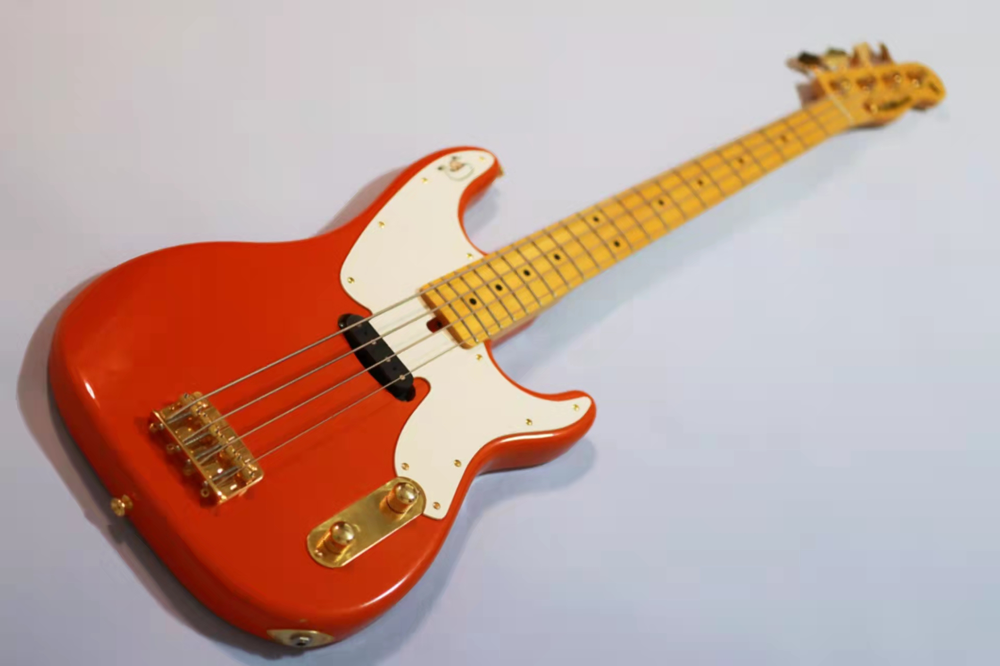
Moon Groove Master Custom opb
Body: Swamp Ash
Neck: Maple
Fingerboard: Maple
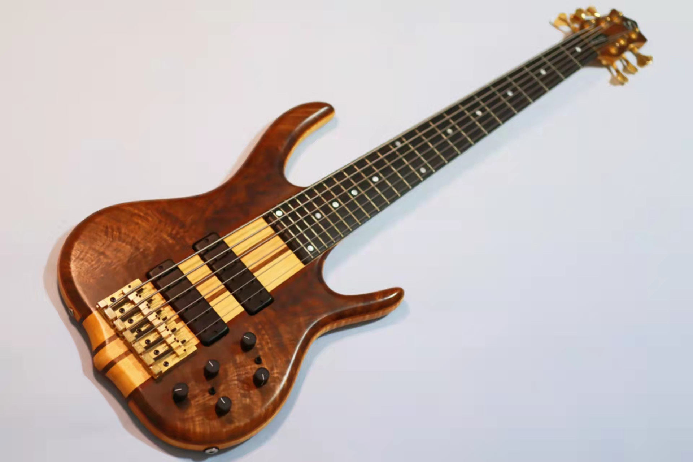
KenSmith Black Tiger 6
Body: Figured Walnut Top & Back with Tiger Maple Core
Neck: 5-Piece Laminated Aged Hardrock Maple & Shedua with Graphite Inlaid Bars
Fingerboard: Macassar Ebony with Mother of Pearl Top & Side Dots
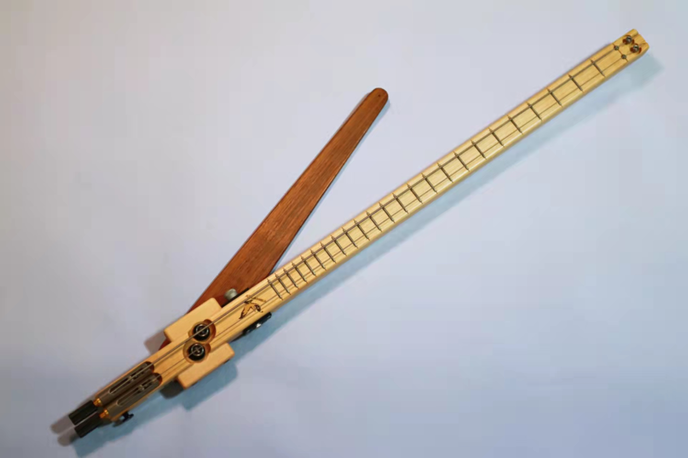
Atlansia Dualist
Body & Neck: Ash
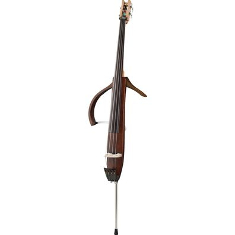
Yamaha SLB300
Body: Spruce/Mahogany
Neck: Maple
Fingerboard: Rosewood
My guitars
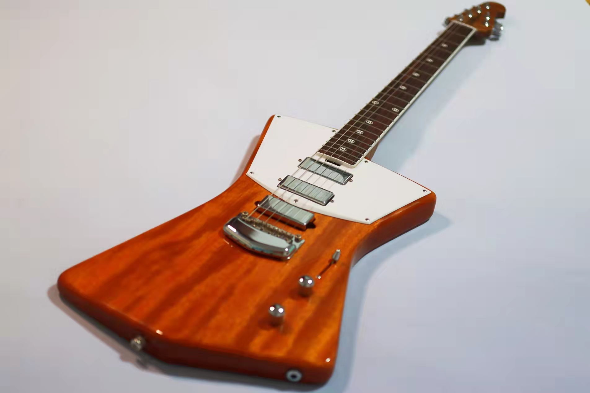
Musicman St.Vincent
Body: Okoume
Neck: Flame Maple
Fingerboard: Madagascar Rosewood
NK Guitar
Body: Walnut
Neck: Walnut
Fingerboard: Ebony
Other Gears
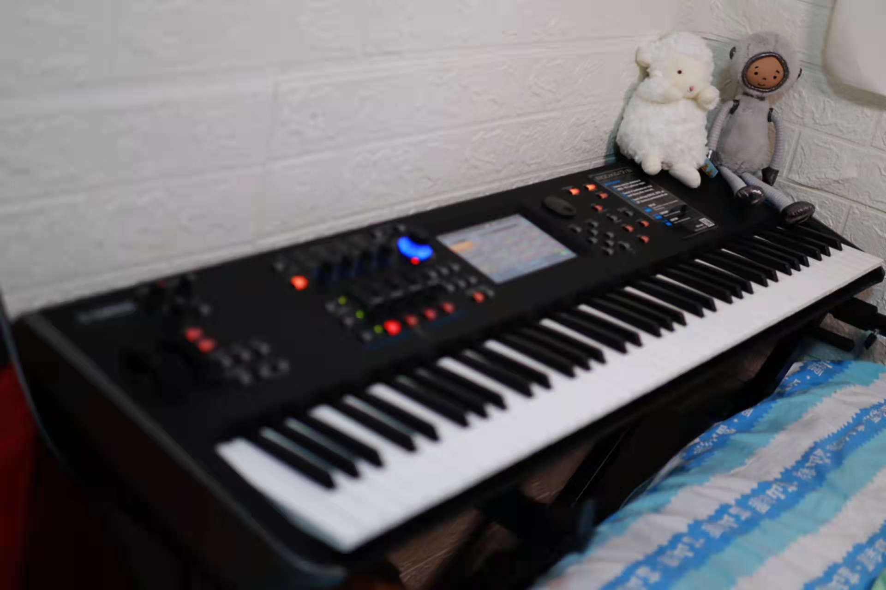
Yamaha Modx7
FM Synthesizer
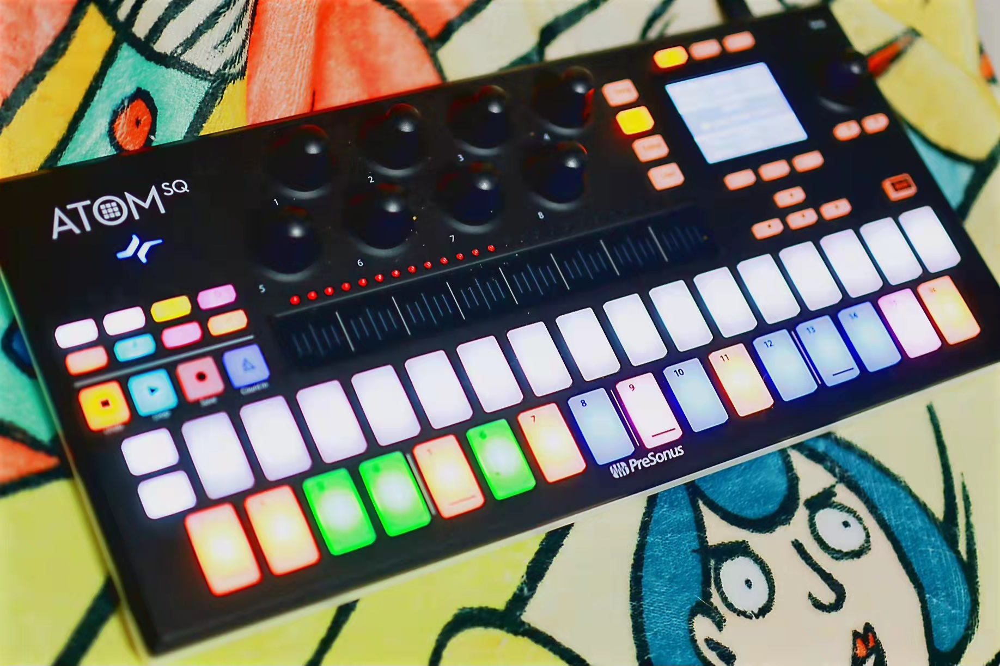
Presonus Atom SQ
Midi Controller
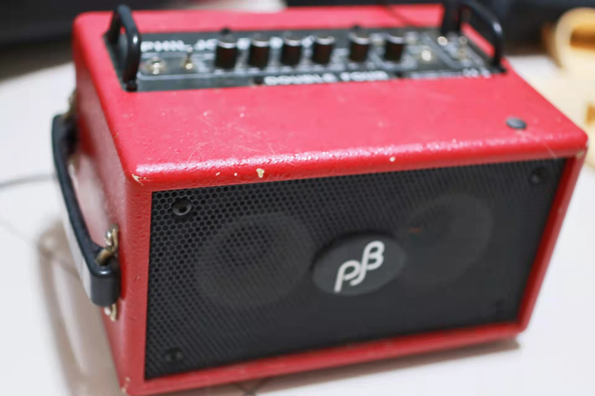
Phil Jones Bass BG-75
Bass Amplifier
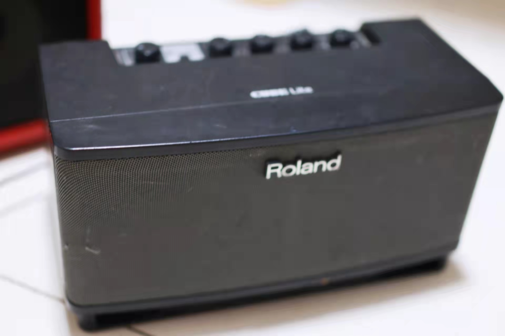
Roland CUBE Lite
Guitar Amplifier
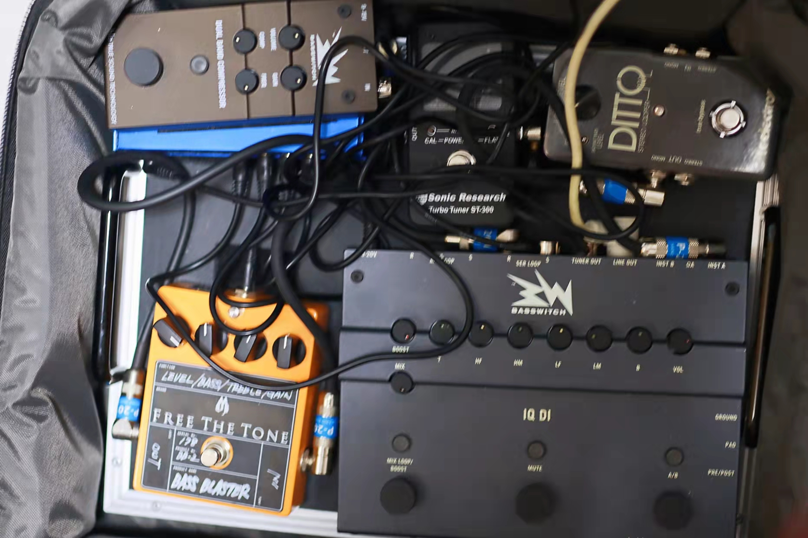
Bass Pedal
FIREGLOW PPS-01 (power)
Free the Tone Bass Blaster (overdrive)
RMI Bass IQ DI (Preamp & DI)
TC Electronic Ditto (looper)
Sonic Research Turbo Turner ST-300 (tuner)
RMI Basswitch Dual Band Compressor (compressor)
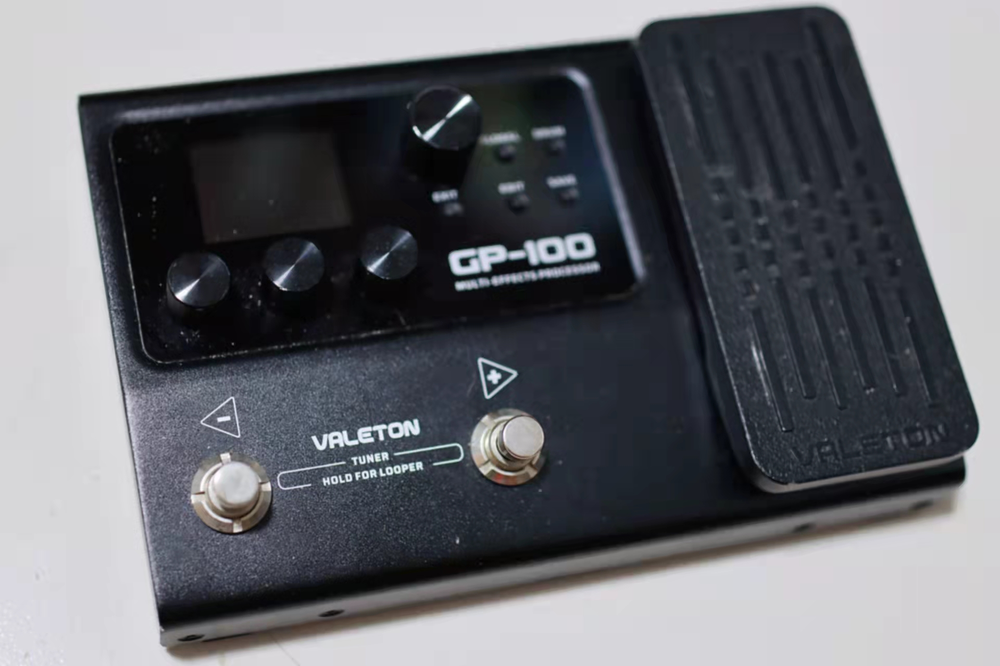
Valeton GP-100
Multi-Effect Processor
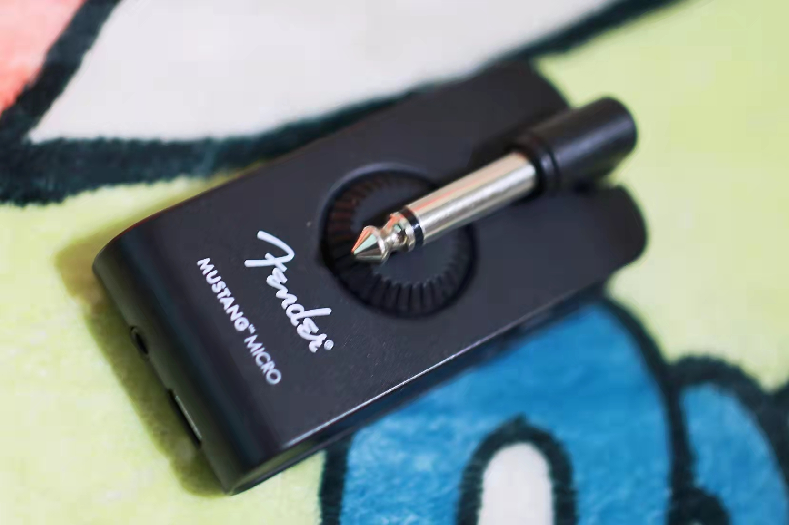
Fender Mustang Micro
Headphone Amplifier
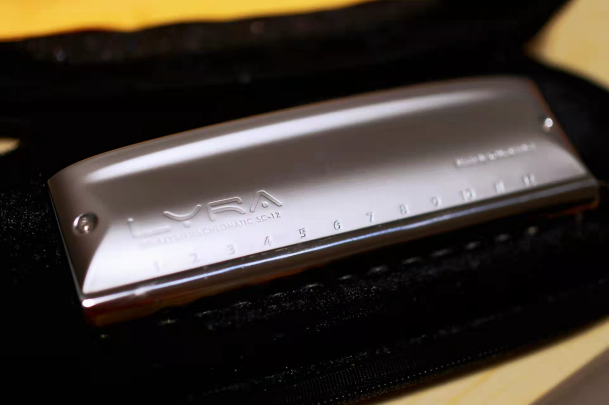
Kongsheng Lyra-12
Chromatic Harmonica
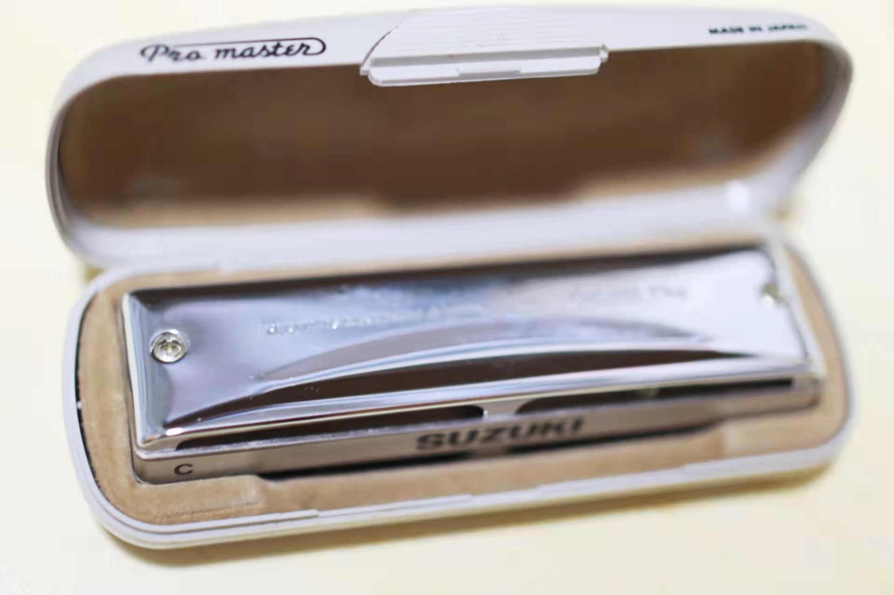
Suzuki MR-350 C Major
Blues Harmonica
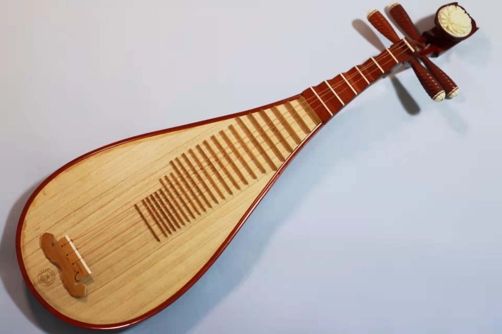
Hsinghai 8912-2
Pipa (Chinese lute)
Sold
AtelierZ M245
Body: Ash
Neck: Maple
Fingerboard: Maple
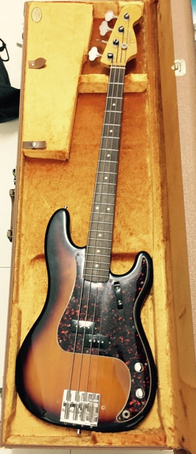
Fender Vintage 62P Bass
Body: Alder
Neck & Fingerboard: Birdeye Maple & Rosewood (Warmoth)
Bridge: Badass Bass II